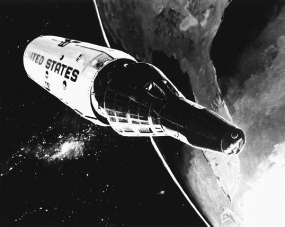
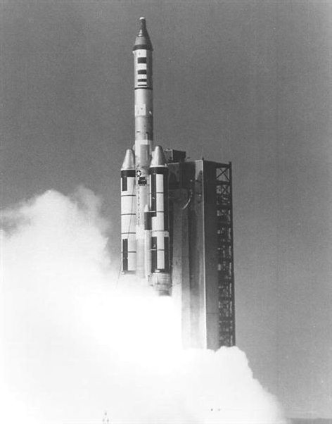

Орбитальная станция MOL
Прежде чем продолжить рассказ о полетах к Луне, хочу коснуться другого аспекта пилотируемой космонавтики 1960-х годов. А именно вопроса создания орбитальных станций. В те годы они рассматривались, в основном, как боевые системы космического базирования.
Как и многое другое в американской космонавтике, первые проекты орбитальных станций основывались на идеях, сформулированных в 1940-1950-х годах немецкими конструкторами. Об этом неоднократно писал, например, Вернер фон Браун. В своих статьях он обосновывал необходимость строительства на околоземной орбите обитаемых станций, которые можно было бы использовать или как заатмосферную обсерваторию, или как ракетно-ядерную базу для нанесения внезапных ударов из космоса. Но потребовалось немало лет, прежде чем удалось преодолеть путь от мечтаний до конкретных работ в этом направлении.
Одним из самых завершенных, хотя и не воплощенным в жизнь, является проект военной орбитальной космической станции MOL (сокращение от Manned Orbiting Laboratory – пилотируемая орбитальная лаборатория), которую разрабатывали инженеры американских ВВС в 1950-1960-х годах. Это был лишь один фрагмент амбициозной космической программы, охватывавшей все аспекты космической деятельности, от разнообразных спутников до планов межпланетных экспедиций.
Эскизный проект станции был утвержден в июне 1959 года как основа для конкурсной разработки орбитальной станции в рамках программы «Джемини». При этом предполагалось, что она будет состоять из трех основных модулей: основного блока, корабля типа «Джемини» и возвращаемой капсулы того же корабля. Для осуществления маневров на орбите допускалась пристыковка к основному блоку двигательной установки одной из ступеней ракеты-носителя «Титан-3».

Орбитальная станция MOL
Кроме чисто военных задач (наблюдение за территорией противника, осмотр и перехват вражеских спутников), станция MOL могла быть использована и в научных целях. Например, для изучения продолжительного влияния невесомости на человеческий организм, проведения метеорологических наблюдений, испытаний оборудования, разработанного для космических кораблей и спутников, и многого другого.
В течение нескольких лет проект станции MOL был одним из многих, которыми занимались в ВВС. Может быть, так продолжалось бы довольно долго, если бы 10 декабря 1963 года тогдашний министр обороны США Роберт Макнамара (Robert McNamara) не объявил о закрытии проекта «Дайнасор» в пользу программы создания долговременной орбитальной станции. Вслед за этим решением работы по MOL были значительно активизированы.
В июне 1964 года к проекту подключились три гиганта аэрокосмического бизнеса: компании «Дуглас», «Дженерал Электрик» и «Мартин». Тогда же впервые были названы конкретные сроки запуска первой станции – 1967–1968 годы.
Если перелистать советские журналы второй половины 1960-х годов, например, «Авиация и космонавтика», можно без труда увидеть, какое беспокойство в оборонном ведомстве СССР вызвал этот проект. Всячески подчеркивалась военная направленность MOL, а также та угроза миру и стабильности, которая появилась бы, если бы США запустили станцию на орбиту. Причина этой кампании понятна: у нас в то время до завершения работ по аналогичной системе «Алмаз» было еще очень далеко по причине нехватки средств, поэтому и старались советские военные убедить руководство страны в необходимости финансирования своего проекта. Или «закрыть» американцев, если бы удалось.
Были у проекта MOL противники и в самих США. Например, сенатор Клинтон Андерсон (Clinton Anderson), глава Комитета по аэронавтике и космонавтике Конгресса, направил в 1964 году президенту Линдону Джонсону письмо, в котором призвал его объединить программу «Аполлон» с программой создания орбитальной станции. По мнению сенатора, это позволит сэкономить значительные средства, так как на базе наработок по орбитальным модулям лунного корабля можно спроектировать полноценную долговременную станцию. В такой позиции был определенный резон. Хотя была и чисто политическая подоплека – приближались перевыборы в сенат, и Андерсон «набирал очки» в глазах своих избирателей. Джонсон не внял предложению сенатора и предпочел поддержать Пентагон. На проект MOL было дополнительно выделено 1,5 миллиарда долларов.
В целом проектирование станции было завершено в 1965 году. Она должна была представлять собой герметичный цилиндр длиной 12,7 метра, максимальным диаметром 3 метра и массой 8,62 тонны. Размеры, прямо скажем, весьма скромные. Даже первая советская орбитальная станция «Салют» впоследствии оказалась больше. Экипаж MOL должен был состоять из двух человек. Расчетный срок эксплуатации – 40 дней.
30 ноября 1966 года был запущен габаритно-весовой макет станции. Для его доставки на орбиту была задействована ракета-носитель «Титан-3С».

Запуск макета орбитальной станции MOL
В том же году началась подготовка астронавтов, отобранных для участия в программе. Из НАСА в ВВС даже передали капсулу корабля «Джемини-6» и другое оборудование для тренировок экипажей.
В феврале 1967 года был определен основной подрядчик по изготовлению станции. Им стала компания «Дуглас».
Однако очень скоро выяснилось, что в проекте MOL имеются серьезные проблемы. Конструкторы не укладывались в весовые ограничения, что требовало срочной модернизации ракеты-носителя «Титан». Увеличить ее грузоподъемность намеревались за счет навесных ускорителей, но на это требовалось время. В результате первый запуск был отложен на 1970 год, а стоимость проекта возросла на 700 миллионов долларов.
Основной блок будущей станции был изготовлен в марте 1968 года. Его тут же отправили для проведения статических испытаний. Но начать их не успели – в середине года было принято решение о сворачивании работ.
В тот период прекратилась работа по многим другим проектам, связанным с пилотируемой космонавтикой. Это было связано с резким обострением ситуации в мире – война во Вьетнаме, сложная обстановка на Ближнем Востоке, новый виток в гонке вооружений между США и СССР. Экономили на всем. И, в первую очередь, на том, что не могло дать должный эффект.
К тому же выяснилось, что пилотируемые разведывательные станции не так уж и нужны. Все возложенные на них задачи успешно выполняли беспилотные аппараты. Это было дешевле и проще.
А в завершение рассказа о MOL, пара слов еще об одном проекте, который мог бы стать продолжением разработки ВВС на более позднем этапе. К 1968 году он был еще только на бумаге и дальше дело не пошло. Речь идет о большой научно-исследовательской станции LORL (сокращение от Large Orbiting Research Laboratory – большая орбитальная исследовательская лаборатория). Она должна была создаваться из модулей, доставляемых на орбиту тяжелыми носителями «Сатурн-5». Экипаж – 18 человек. Срок службы – 5 лет. С учетом возможности организации транспортного потока «Земля-космос-Земля», эксплуатация комплекса могла быть и более продолжительной.
И все-таки США обзавелись собственной орбитальной станцией. Произошло это в 1973 году и стало ответом на полеты советских орбитальных станций. Но об этом чуть позже. А пока давайте возвратимся к программе «Аполлон».